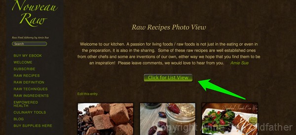
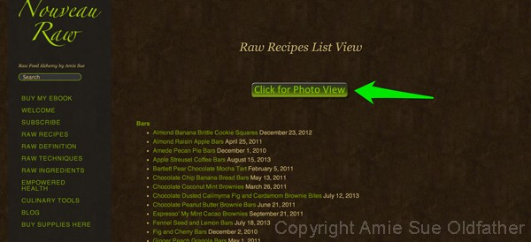

Upgrades on Recipe Viewing
Good morning, afternoon, or evening,… whenever this posting should find you…
I just wanted to point out that we have done a little upgrading to NouveauRaw for your recipe viewing pleasure. You can view them as you always have by clicking on the photos or you can view the recipes as a list. Just click on the the “Click for List View” button near the top of the recipe page. See the screenshot below. I am such a visual person so I prefer searching the recipe pictures right off from the get-go, but I realize that many of you are “list people” and would rather scan down a list of recipes to find their inspiration.
Bob and I must have spent a good hour or two just designing the button. lol To big, to small, to long, wrong feel, text not just right, to blocky, to harsh, to glossy, to modern… one of the joys (?) of living with an artist. ;0 I think I dreamt of buttons all night long. Anyway, enough about the button… I hope that you enjoy having the option. Let me know what you think.

I found it rather shocking as to how many recipes that I have created and share on this site. I don’t think about it. I
just create, create, create and share, share, share. After installing the button so we could click over to the
list view, we took it for a test spin and up popped the list of recipes. I scrolled and scrolled and scrolled.
Wowza! That really brought it home to me. hehe I liken it to the Holiday Gain… during the holidays
you eat and eat and eat, but then after the holidays pass, you step
on the scale… and your eyes about pop out of your head. I GAINED that much?!!! haha In this case…
I MADE that many??!! And Bob says, “I ATE that many??!! lol Life is fun. :)

© AmieSue.com